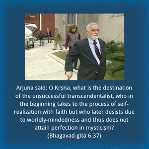
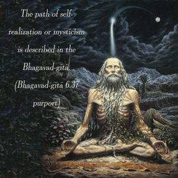
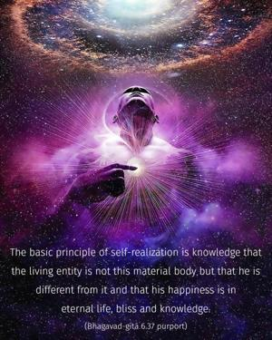

Arjuna said: O Kṛṣṇa, what is the destination of the unsuccessful transcendentalist, who in the beginning takes to the process of self-realization with faith but who later desists due to worldly-mindedness and thus does not attain perfection in mysticism?



The path of self-realization or mysticism is described in the Bhagavad-gītā. The basic principle of self-realization is knowledge that the living entity is not this material body but that he is different from it and that his happiness is in eternal life, bliss and knowledge. These are transcendental, beyond both body and mind. Self-realization is sought by the path of knowledge, by the practice of the eightfold system or by bhakti-yoga. In each of these processes one has to realize the constitutional position of the living entity, his relationship with God, and the activities whereby he can reestablish the lost link and achieve the highest perfectional stage of Kṛṣṇa consciousness. Following any of the above-mentioned three methods, one is sure to reach the supreme goal sooner or later. This was asserted by the Lord in the Second Chapter: even a little endeavor on the transcendental path offers a great hope for deliverance. Out of these three methods, the path of bhakti-yoga is especially suitable for this age because it is the most direct method of God realization. To be doubly assured, Arjuna is asking Lord Kṛṣṇa to confirm His former statement. One may sincerely accept the path of self-realization, but the process of cultivation of knowledge and the practice of the eightfold yoga system are generally very difficult for this age. Therefore, despite constant endeavor one may fail, for many reasons. First of all, one may not be sufficiently serious about following the process. To pursue the transcendental path is more or less to declare war on the illusory energy. Consequently, whenever a person tries to escape the clutches of the illusory energy, she tries to defeat the practitioner by various allurements. A conditioned soul is already allured by the modes of material energy, and there is every chance of being allured again, even while performing transcendental disciplines. This is called yogāc calita-mānasaḥ: deviation from the transcendental path. Arjuna is inquisitive to know the results of deviation from the path of self-realization.